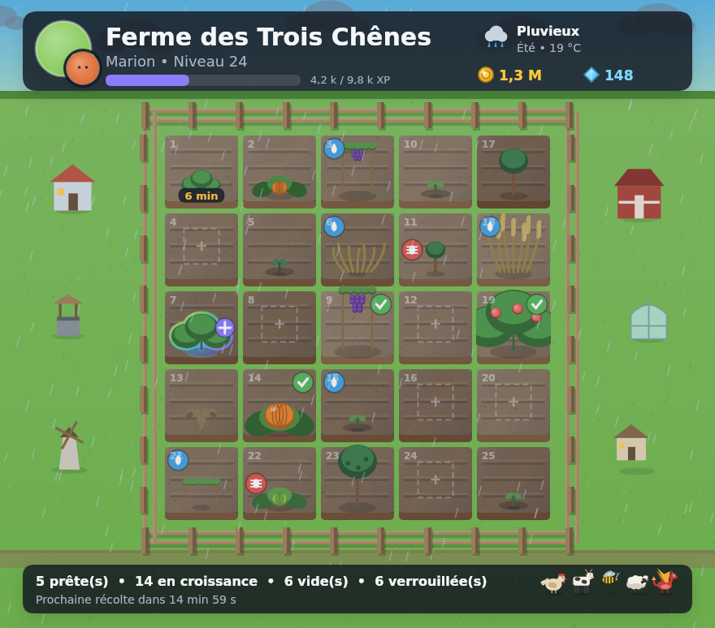
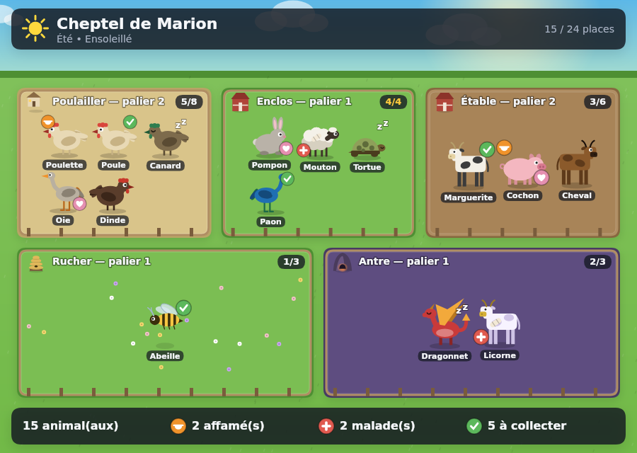
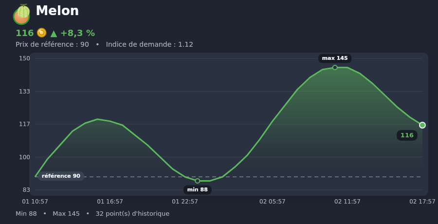

Ce que ça donne



Le jeu
🌱 Cultiver
41 cultures, des saisons qui comptent, de la météo qui abîme, des nuisibles, des mauvaises herbes et une fertilité qui s'épuise si on force.
🐄 Élever
24 animaux à nourrir, câliner et faire reproduire. Certains naissent brillants ou dorés — c'est le seul graal du jeu, et il ne s'achète pas.
⚒️ Transformer
49 recettes, 18 bâtiments à faire monter en niveau, et 150 objets dont des poissons et des minerais qui ne se trouvent qu'en pêchant ou en creusant.
💰 Vendre
Un marché dont les prix suivent l'offre et la demande, un hôtel des ventes entre joueurs, des ordres permanents et des alertes de prix.
🤝 Coopérer
Des coopératives jusqu'à 50 membres avec trésorerie et objectifs communs, des visites de ferme, de l'entraide et des classements.
📅 Voir le monde tourner
Saisons, météo quotidienne, événements de calendrier, passe saisonnier, almanach, 52 quêtes et 34 succès.
Par où commencer
| Commande | Ce qu'elle fait |
|---|---|
/start | Crée votre ferme et lance le tutoriel. |
/farm | Affiche la ferme, avec les boutons pour tout faire. |
/plant /water /harvest | Le cycle de base. |
/animals | Le cheptel, ses jauges et sa production. |
/market /sell | Les prix du moment et la vente. |
/collection | Ce que vous avez découvert, et ce qui manque. |
/history | Où sont passées vos pièces, ligne par ligne. |
/help | Toutes les commandes, par catégorie. |
Le jeu parle français et anglais, et suit la langue de votre client Discord. /lang permet d'en changer.
Vos données
Harvester conserve le strict nécessaire pour faire tourner une ferme, et vous rend la main à tout moment : /account export vous renvoie tout ce que le bot sait de vous dans un fichier, et /account delete efface votre compte pour de bon.